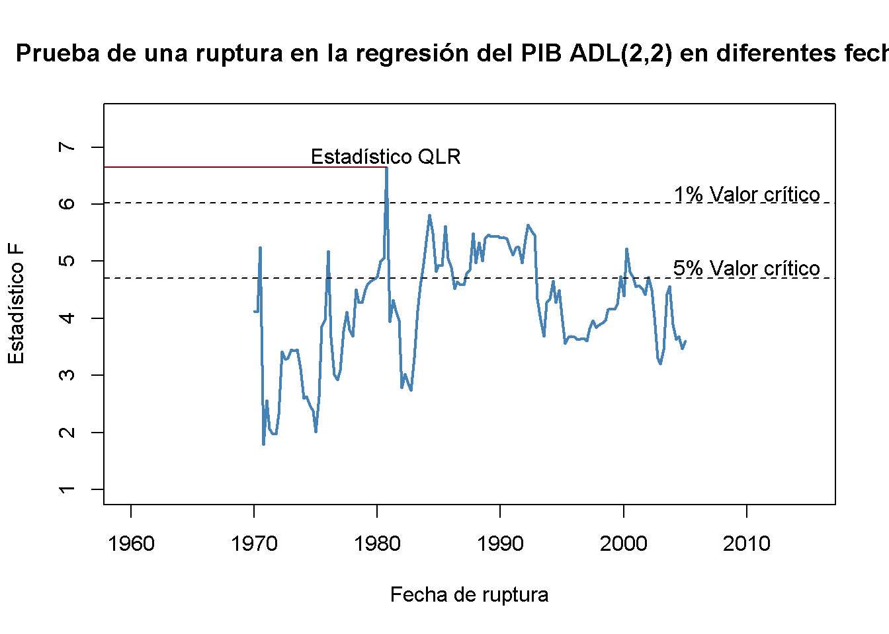
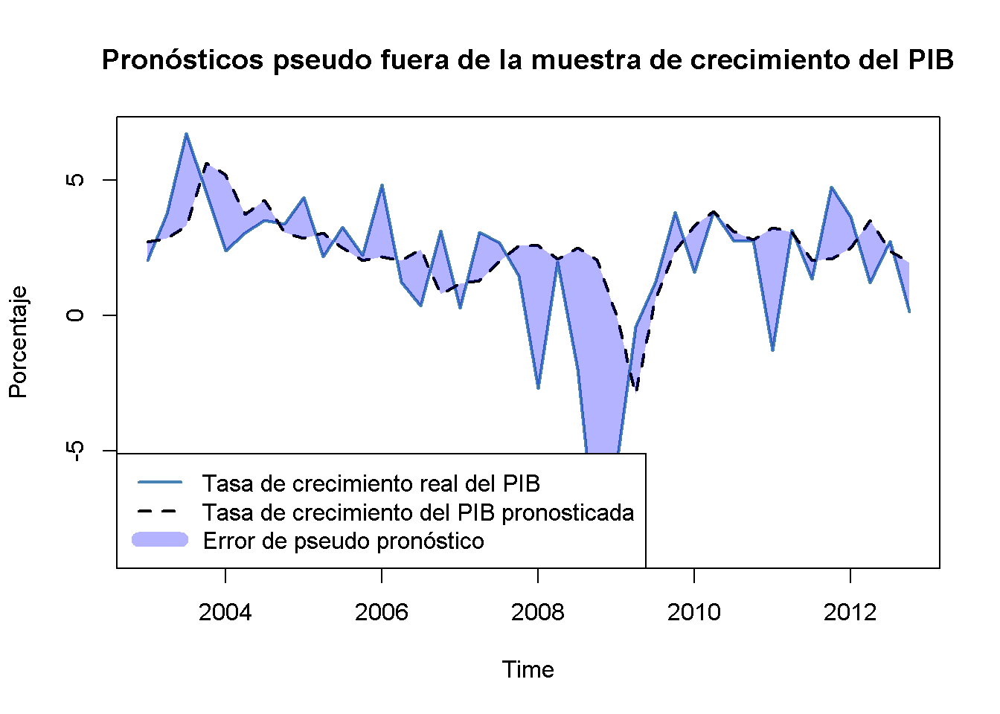

15.8 No estacionariedad II: Pausas
Cuando existen cambios discretos (en una fecha distinta) o graduales (en el tiempo) en los coeficientes de regresión de la población, la serie es no estacionaria. Estos cambios se denominan rupturas. Existe una variedad de razones por las cuales pueden ocurrir rupturas en las series de tiempo macroeconómicas, pero la mayoría de las veces están relacionadas con cambios en la política económica o cambios importantes en la estructura de la economía.
Si las rupturas no se tienen en cuenta en el modelo de regresión, las estimaciones de MCO reflejarán la relación promedio. Dado que estas estimaciones pueden ser muy engañosas y dar como resultado una previsión de baja calidad, se está interesado en probar las pausas. Se debe distinguir entre probar una pausa cuando se conoce la fecha y probar una pausa con una fecha es desconocida.
Dejar que \(\tau\) denote una fecha de ruptura conocida y sea \(D_t(\tau)\) una variable binaria que indique períodos de tiempo antes y después de la ruptura. La incorporación de la ruptura en un modelo de regresión ADL(\(1\), \(1\)) produce:
\[\begin{align*} Y_t =& \beta_0 + \beta_1 Y_{t-1} + \delta_1 X_{t-1} + \gamma_0 D_t(\tau) + \gamma_1\left[D_t(\tau) \cdot Y_{t-1}\right] \\ &+ \, \gamma_2\left[ D_t(\tau) \cdot X_{t-1} \right] + u_t, \end{align*}\]
donde se permiten cambios discretos en \(\beta_0\), \(\beta_1\) y \(\beta_2\) en la fecha de ruptura \(\tau\). La hipótesis nula de no ruptura, \[H_0: \gamma_0=\gamma_1=\gamma_2=0,\] se puede contrastar con la alternativa de que al menos uno de los \(\gamma\) no es cero usando una prueba \(F\). Esta idea se llama prueba de Chow por Gregory Chow (1960).
Cuando se desconoce la fecha de ruptura, se puede utilizar la prueba (Quandt 1960) mejor conocida como razón de verosimilitud de Quandt (QLR). Es una versión modificada de la prueba de Chow que utiliza el mayor de todos los estadísticos \(F\) obtenidos al aplicar la prueba de Chow para todas las posibles fechas de ruptura en un rango predeterminado \(\left[\tau_0,\tau_1\right]\). La prueba QLR se resume en el Concepto clave 14.9.
Concepto clave 14.9
La prueba QLR para la estabilidad del coeficiente
La prueba QLR se puede utilizar para probar una ruptura en la función de regresión de la población si se desconoce la fecha de la ruptura. El estadístico de prueba QLR es el estadístico más grande (Chow) \(F(\tau)\) calculado sobre un rango de fechas de ruptura elegibles \(\tau_0 \leq \tau \leq \tau_1\):
\[\begin{align} QLR = \max\left[F(\tau_0),F(\tau_0 +1),\dots,F(\tau_1)\right]. \tag{15.14} \end{align}\]Las propiedades más importantes son:
La prueba QLR se puede aplicar para probar si un subconjunto de los coeficientes en la función de regresión de población se rompe, pero la prueba también rechaza si existe una evolución lenta de la función de regresión.
Cuando existe una sola ruptura discreta en la función de regresión poblacional que se encuentra en una fecha dentro del rango probado, el estadístico de prueba \(QLR\) es \(F(\widehat{\tau})\) y \(\widehat{\tau}/T\) es un estimador consistente de la fracción de la muestra en la que se encuentra la ruptura.
La distribución de muestra grande de \(QLR\) depende de \(q\), el número de restricciones que se están probando y ambas razones de los puntos finales del tamaño de la muestra, \(\tau_0/T, \tau_1/T\).
Similar a la prueba ADF, la distribución de muestra grande de \(QLR\) no es estándar.
¿Se ha mantenido estable el poder predictivo del diferencial de plazo?
Usando el estadístico QLR se puede probar si existe una ruptura en los coeficientes de los rezagos del diferencial de plazo en (15.5), el modelo de regresión ADL(\(2\), \(2\)) del crecimiento del PIB. Siguiendo el Concepto clave 14.9, se modifica la especificación de (15.5) agregando una variable ficticia de ruptura \(D(\tau)\) y sus interacciones con ambos rezagos del margen de plazo y se elige el rango de puntos de ruptura que se probarán como 1970:Q1 - 2005:Q2 (estos períodos son el centro del \(70\%\) de los datos de la muestra que va de 1962:Q2 - 2012:Q4). Por tanto, el modelo se convierte en
\[\begin{align*} GDPGR_t =&\, \beta_0 + \beta_1 GDPGR_{t-1} + \beta_2 GDPGR_{t-2} \\ &+\, \beta_3 TSpread_{t-1} + \beta_4 TSpread_{t-2} \\ &+\, \gamma_1 D(\tau) + \gamma_2 (D(\tau) \cdot TSpread_{t-1}) \\ &+\, \gamma_3 (D(\tau) \cdot TSpread_{t-2}) \\ &+\, u_t. \end{align*}\]
A continuación, se estima el modelo para cada punto de ruptura y se calcula el estadístico \(F\) correspondiente a la hipótesis nula \(H_0: \gamma_1=\gamma_2=\gamma_3=0\). El estadístico \(QLR\) es el más grande de los estadísticos \(F\) obtenidos de esta manera.
# configurar un rango de posibles fechas de ruptura
tau <- seq(1970, 2005, 0.25)
# inicializar vector de estadísticos F
Fstats <- numeric(length(tau))
# ciclo de estimación sobre fechas de ruptura
for(i in 1:length(tau)) {
# configurar variable ficticia
D <- time(GDPGrowth_ts) > tau[i]
# estimar el modelo ADL(2,2) con interacciones
test <- dynlm(GDPGrowth_ts ~ L(GDPGrowth_ts) + L(GDPGrowth_ts, 2) +
D*L(TSpread_ts) + D*L(TSpread_ts, 2),
start = c(1962, 1),
end = c(2012, 4))
# calcular y guardar el estadístico F
Fstats[i] <- linearHypothesis(test,
c("DTRUE=0", "DTRUE:L(TSpread_ts)",
"DTRUE:L(TSpread_ts, 2)"),
vcov. = sandwich)$F[2]
}Se determina el estadístico \(QLR\) usando max().
# identificar el estadístico QLR
QLR <- max(Fstats)
QLR
#> [1] 6.651156Se comprueba que el estadístico \(QLR\) es el estadístico \(F\) obtenido para la regresión donde se elige 1980:Q4 como fecha de ruptura.
# identificar el período de tiempo en el que se observa el estadístico QLR
as.yearqtr(tau[which.max(Fstats)])
#> [1] "1980 Q4"Dado que se prueba las hipótesis \(q = 3\) y se considera que el \(70\%\) de los datos centrales de la muestra contienen rupturas, el valor crítico correspondiente de \(1\%\) de la prueba \(QLR\) es \(6.02\). Se rechaza la hipótesis nula de que todos los coeficientes (los coeficientes en ambos rezagos del margen de plazo y la intersección) son estables, ya que el estadístico de \(QLR\) calculado excede este umbral. Por lo tanto, la evidencia de la prueba \(QLR\) sugiere que existe una ruptura en el modelo ADL(\(2\), \(2\)) de crecimiento del PIB a principios de los años ochenta.
Se convierte el vector de estadísticos secuenciales de punto de ruptura \(F\) en un objeto de serie de tiempo y luego se genera una gráfica simple con algunas anotaciones.
# serie de estadísticos F
Fstatsseries <- ts(Fstats,
start = tau[1],
end = tau[length(tau)],
frequency = 4)
# graficar los estadísticos F
plot(Fstatsseries,
xlim = c(1960, 2015),
ylim = c(1, 7.5),
lwd = 2,
col = "steelblue",
ylab = "Estadístico F",
xlab = "Fecha de ruptura",
main = "Prueba de una ruptura en la regresión del PIB ADL(2,2) en diferentes fechas")
# líneas horizontales discontinuas para valores críticos y estadístico QLR
abline(h = 4.71, lty = 2)
abline(h = 6.02, lty = 2)
segments(0, QLR, 1980.75, QLR, col = "darkred")
text(2010, 6.2, "1% Valor crítico")
text(2010, 4.9, "5% Valor crítico")
text(1980.75, QLR+0.2, "Estadístico QLR")
Pronóstico pseudo fuera de la muestra
Los pronósticos pseudo fuera de la muestra se utilizan para simular el rendimiento fuera de la muestra (el rendimiento del pronóstico en tiempo real) de un modelo de regresión de series de tiempo. En particular, los pronósticos pseudo fuera de muestra permiten la estimación de los \(EPRCM\) del modelo y permiten a los investigadores comparar diferentes especificaciones del modelo respecto de su poder predictivo. El Concepto clave 14.10 resume esta idea.
Concepto clave 14.10
Pronóstico pseudo fuera de la muestra
Dividir los datos de la muestra en \(s = T-P\) y \(P\) observaciones subsiguientes. Las observaciones \(P\) se utilizan como observaciones pseudo fuera de la muestra.
Estimar el modelo usando las primeras \(s\) observaciones.
Calcular el pseudo-pronóstico \(\overset{\sim}{Y}_{s+1\vert s}\).
Calcular el error de pseudo-pronóstico \(\overset{\sim}{u}_{s+1} = Y_{s+1} - \overset{\sim}{Y}_{s+1\vert s}\).
Repetir los pasos del 2 al 4 para todas las fechas restantes pseudo-fuera de muestra; es decir, volver a estimar el modelo en cada fecha.
¿Cambió el poder predictivo de la extensión del término durante la década de 2000?
El conocimiento adquirido en la sección anterior da razones para suponer que el desempeño pseudo-fuera de la muestra de los modelos de ADL(\(2\), \(2\)) estimados usando datos después de la ruptura a principios de la década de 1980 no deberían deteriorarse en relación con el uso de la muestra completa: Siempre que los coeficientes de la función de regresión poblacional sean estables después de la ruptura potencial en 1980:Q4, estos modelos deben tener un buen poder predictivo. Se verifica esto calculando pronósticos pseudo-fuera de la muestra para el período 2003:Q1 - 2012:Q4, un rango que cubre 40 períodos, donde el pronóstico para 2003:Q1 se realiza utilizando datos de 1981:Q1 - 2002:Q4, el pronóstico para 2003:Q2 se basa en datos de 1981:Q1 - 2003:Q1 y así sucesivamente.
De manera similar, para la prueba \(QLR\) se usa un bucle for() para la estimación de los 40 modelos y se recopila sus \(SER\)s y los pronósticos obtenidos en un vector que luego se usa para calcular pseudo errores de salida de pronóstico de la muestra.
# fechas de finalización de la muestra
EndOfSample <- seq(2002.75, 2012.5, 0.25)
# inicializar los pronósticos matriciales
forecasts <- matrix(nrow = 1,
ncol = length(EndOfSample))
# inicializar el vector SER
SER <- numeric(length(EndOfSample))
# bucle de estimación al final de las fechas de muestra
for(i in 1:length(EndOfSample)) {
# estimar modelo ADL(2,2)
m <- dynlm(GDPGrowth_ts ~ L(GDPGrowth_ts) + L(GDPGrowth_ts, 2)
+ L(TSpread_ts) + L(TSpread_ts, 2),
start = c(1981, 1),
end = EndOfSample[i])
SER[i] <- summary(m)$sigma
# datos de muestra para el pronóstico de un período por delante
s <- window(ADLdata, EndOfSample[i] - 0.25, EndOfSample[i])
# calcular pronóstico
forecasts[i] <- coef(m) %*% c(1, s[1, 1], s[2, 1], s[1, 2], s[2, 2])
}# calcular errores de pronóstico psuedo fuera de muestra
POOSFCE <- c(window(GDPGrowth_ts, c(2003, 1), c(2012, 4))) - forecastsA continuación, se traducen los pronósticos pseudo fuera de la muestra en un objeto de clase ts y se grafica la tasa de crecimiento del PIB real contra la serie pronosticada.
# series de pronósticos pseudo fuera de la muestra
PSOSSFc <- ts(c(forecasts),
start = 2003,
end = 2012.75,
frequency = 4)
# graficar la serie de tiempo de crecimiento del PIB
plot(window(GDPGrowth_ts, c(2003, 1), c(2012, 4)),
col = "steelblue",
lwd = 2,
ylab = "Porcentaje",
main = "Pronósticos pseudo fuera de la muestra de crecimiento del PIB")
# agregar la serie de pronósticos pseudo fuera de la muestra
lines(PSOSSFc,
lwd = 2,
lty = 2)
# área sombreada entre curvas (el error de pseudo pronóstico)
polygon(c(time(PSOSSFc), rev(time(PSOSSFc))),
c(window(GDPGrowth_ts, c(2003, 1), c(2012, 4)), rev(PSOSSFc)),
col = alpha("blue", alpha = 0.3),
border = NA)
# agregar una leyenda
legend("bottomleft",
lty = c(1, 2, 1),
lwd = c(2, 2, 10),
col = c("steelblue", "black", alpha("blue", alpha = 0.3)),
legend = c("Tasa de crecimiento real del PIB",
"Tasa de crecimiento del PIB pronosticada",
"Error de pseudo pronóstico"))
Aparentemente, los pseudo pronósticos siguen bastante bien la tasa de crecimiento real del PIB, excepto por el problema en 2009 que se puede atribuir a la reciente crisis financiera.
El \(SER\) del primer modelo (estimado con datos de 1981:Q1 a 2002:Q4) es \(2.39\), por lo que, según el ajuste dentro de la muestra, se esperaría que los errores de pronóstico fuera de la muestra tengan una media cero y una raíz del error de pronóstico cuadrático medio de alrededor de \(2.39\).
# SER del modo ADL(2,2) usando datos de 1981:Q1 - 2002:Q4
SER[1]
#> [1] 2.389773La raíz del error de pronóstico cuadrático medio de los pronósticos pseudo fuera de muestra es algo mayor.
# calcular la raíz del error de pronóstico cuadrático medio
sd(POOSFCE)
#> [1] 2.667612Una hipótesis interesante es si el error medio de pronóstico es cero; es decir, los pronósticos de ADL(\(2\), \(2\)) son correctos, en promedio. Esta hipótesis se prueba fácilmente usando la función t.test().
# probar si el error medio de pronóstico es cero
t.test(POOSFCE)
#>
#> One Sample t-test
#>
#> data: POOSFCE
#> t = -1.5523, df = 39, p-value = 0.1287
#> alternative hypothesis: true mean is not equal to 0
#> 95 percent confidence interval:
#> -1.5078876 0.1984001
#> sample estimates:
#> mean of x
#> -0.6547438La hipótesis no puede rechazarse al nivel de significancia de \(10\%\). En conjunto, el análisis sugiere que los coeficientes del modelo ADL(\(2\), \(2\)) se han mantenido estables desde la supuesta ruptura a principios de los años ochenta.